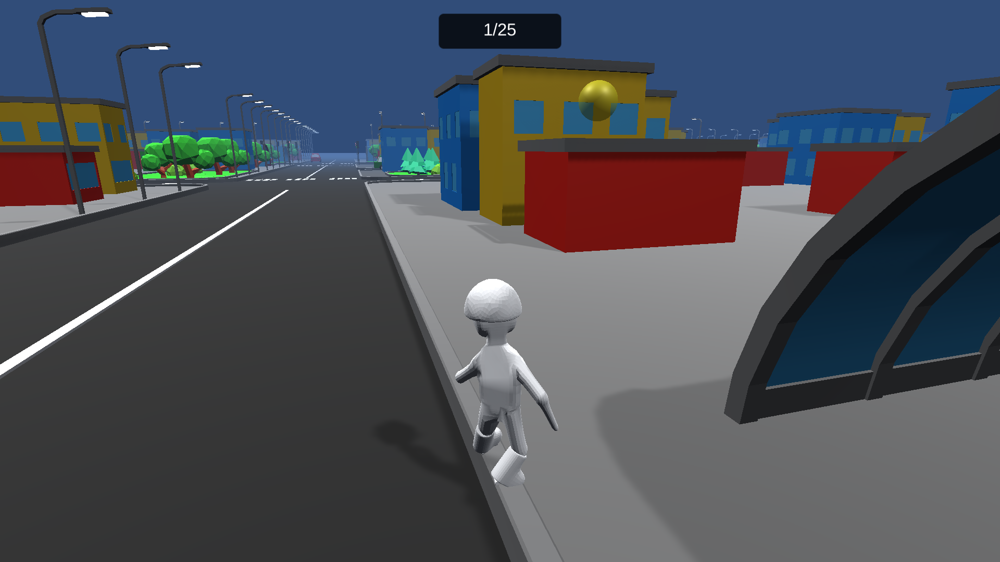

About |
Programming |
Design |
|---|
|
 |
I'll make it no secret: I am a HUGE fan of 2000's "Jet Set Radio". While the game gets a lot of well-deserved credit for its art direction and music, I think the game also does a good job of making movement fun by turning the environment into a sort of puzzle. The player is always looking for that cool route that gets them from point A to point B faster, or a chance to loop around a series of rails infinitely to rack up a lot of score for the level. Going back to other games, particularly in the open world genre, movement just feels boring. Not a knock against open world games, of course, but it was enough to get me thinking: How hard would it be to make movement fun?
So I challenged myself to recreate the movement system of Jet Set Radio on my own. Through quite a bit of trial and error (and no shortage of vector calculations), I reached a point that I felt was satisfactory for a prototype. This build includes a sample low-detail level to play around with, and some collectibles to help push the player to explore the level.
| Steven Moncrief | stevenamoncrief@gmail.com | Resume |